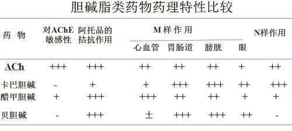
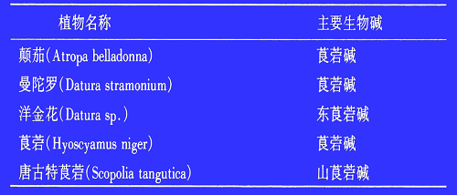

胆碱受体激动药和阻断药¶
1. 激动剂¶
1.1 M和N受体激动药¶
胆碱类包括： 乙酰胆碱，卡巴胆碱，醋甲胆碱(N样作用很弱)
乙酰胆碱¶
特点：不稳定，作用广泛，工具药
M样作用：心血管，胃肠道，支气管，泌尿道，眼睛，腺体
N样作用：肌肉(N2，先抽搐后抑制)，神经(N1，肾上腺髓质，神经节)
中枢作用：大脑M受体为主，脊髓N受体为主，增强学习记忆，兴奋。
卡巴胆碱（氨甲酰胆碱）¶
特点：不易被AChE降解，作用时间长，毒性大，阿托品解救效果不满意，膀胱和肠道选择性高
应用：皮下注射用于术后肠胀气和尿潴留；局部滴眼治疗青光眼
醋甲胆碱¶
特点：M作用为主；作用时间比ACh强；小剂量有明显心血管作用(降血压，慢心率)
应用：口腔粘膜干燥症
禁忌：支气管哮喘，甲亢，冠脉缺血和溃疡病
1.2 M胆碱受体激动药¶
胆碱类：贝胆碱
生物碱类：毛果芸香碱、槟榔碱、毒蕈碱
选择性M激动药：
贝胆碱（bethanechol、氯贝胆碱、氨甲酰甲胆碱、卡巴甲胆碱）¶
特点：不易被AChE 水解，选择性作用于膀胱和肠道平滑肌， 可口服和注射
应用：术后肠胀气和尿潴留
毛果芸香胆碱¶
特点：对眼睛（缩瞳、降低眼内压、调节痉挛）和腺体（腺体分泌增加，尤其是汗腺和唾液腺、平滑肌收缩力和张力增加）作用强，主要用于眼科
用途：
1. 青光眼（闭角型【前房角间隙狭窄、充血性】和开角型【巩膜静脉窦血管硬化、单纯性】）
2. 缩瞳：与阿托品交替使用，防止炎症时虹膜与晶状体粘连
注意
滴眼时压迫内眦，避免药液经鼻腔吸收，产生M样作用（出汗，唾液分泌等）
M激动药总结¶

1.3 N受体¶
烟碱(Nicotine,尼古丁）从烟草中提取，是烟叶(tobacco)中的主要成分
作用： N样作用，具毒理学意义。
1 2 | 1）兴奋神经节N1受体，小剂量兴奋，大剂量抑制。 2）兴奋神经肌肉接头N2受体。 |
烟碱在临床上无实用价值，但在毒理上有很大意义。
烟碱剧毒，急性中毒死亡快，与氰化物相似。成人致死量约为50mg。烟碱在粘膜极易吸收，吸收后80%~90%在体内破坏，少部分以原形从肾排出。
2. 胆碱受体阻断药¶
2.1 分类¶
按受体的选择性分为
1 2 | 1）M（M1、M2、M3）受体阻断药[阿托品和阿托品类生物碱、季胺类解痉药、叔胺类解痉药、选择性M1受体亚型阻断药] 2）N（N1、N2）受体阻断药 |
按用途分为
1 2 3 4 | 1）平滑肌解痉药：阿托品，溴丙胺太林，贝那替秦 2）神经节阻断药（控制血压）：美卡拉明 3）骨骼肌松弛药：筒箭毒碱、琥珀胆碱 4）中枢抗胆碱药：苯海索 |
2.2 M胆碱受体阻断药¶
阿托品和阿托品类生物碱¶
颠茄科植物中分离出的生物碱，天然生物碱为左旋莨菪làng dàng碱（不稳定），消旋后得到阿托品，现已人工合成

阿托品¶
特点：
对M-R亚型选择性低
各器官对阿托品大剂量对N1-R也有阻断作用
敏感性有差异
体内过程：
吸收：口服吸收迅速，t_{1/2}为4 h ，作用维持3~4 h，对虹膜和睫状肌的作用持续约72 h
分布：全身组织（包括血脑及胎盘屏障）
排泄：80%原型经肾排泄，少量经消化道和乳汁排出。
药理作用：
1 2 3 4 5 6 7 8 9 10 11 12 13 14 15 16 | 腺体：唾液腺、汗腺对阿托品最敏感，抑制作用最强
眼：扩瞳、调节麻痹(远视)、升高眼内压
平滑肌：
松弛胃肠平滑肌，缓解胃肠绞痛 ；
松弛尿道平滑肌及膀胱逼尿肌，降低其张力；
胆道、输尿管、子宫和支气管平滑肌松弛作用弱
心脏：
心率：
0.4~0.6mg时可出现心率减慢，但作用短暂（突触前膜M1ACh↑）
1-2 mg时心率加快（阻断窦房结M2受体）
加快心房和房室传导
血管与血压：
治疗量对血管与血压无明显影响
大剂量扩血管：解除小血管痉挛，增加组织灌注量（与M受体阻断无关、直接扩张或代偿性散热反应）
中枢神经系统：
兴奋延髓和高位大脑中枢。严重时由兴奋转入抑制
|
临床应用：
1 2 3 4 5 6 | 1）解除平滑肌痉挛：胆绞痛效果差，常和哌替啶或吗啡合用 2）抑制腺体分泌（用于全身麻醉前给药或严重的盗汗及流涎症） 3）眼科（ (1)虹膜睫状体炎 、(2)验光配眼镜、(3)眼底检查 ） 4）心动过缓及房室传导阻滞 5）抗休克（感染性） 6）解除有机磷酸酯（ACh抑制剂）中毒 |
副作用
阿托品化：
①心率在90～130次/分之间。
②腺体分泌，肺部啰音减少或消失；皮肤干燥灼热，颜色潮红，体温升高；体温在37～38℃波动。
③瞳孔放大，多在0.4～0.5cm。
视物模糊、思维混乱、便秘、尿潴留、瞳孔放大
中毒解救（成人80 ～ 130mg，儿童10mg致死）
对症处理：洗胃、导泻 毒扁豆碱(抗胆碱酯酶药)： 1~4 mg（儿童0.5 mg）缓慢注射，对抗阿托品中毒（包括瞻妄与昏迷）因毒扁豆碱维持作用时间短，需反复给药。 地西泮(神经抑制剂)可解救中枢兴奋症状，但不可用吩噻嗪类(阻断脑内多巴胺受体)药物（阻断M受体，加重中毒）
禁忌
青光眼和前列腺肥大（加重排尿困难）
山莨菪碱¶
与阿托品相比，其特点如下：
1 2 3 4 5 | 1）选择性解除血管痉挛 2）选择性解除平滑肌痉挛 3）抑制唾液分泌作用弱 4）扩瞳作用弱 5）中枢兴奋作用弱（不通过血脑屏障） |
用途:
1 2 | 1 ）感染中毒性休克 2 ）内脏平滑肌绞痛 |
不良反应:
较阿托品少
常见不良反应为口干、皮肤干燥（0.5mg）、心率加快、瞳孔散大、视力模糊（1mg）等。
禁忌证
青光眼、前列腺肥大禁用
东莨菪碱¶
特点：
1 2 3 4 5 | 1）中枢抑制作用：东莨菪碱易进入中枢，中枢抑制作用强，小剂量镇静，较大剂量催眠。 对呼吸中枢有兴奋作用 2 ）抑制腺体分泌作用>阿托品 3 ）中枢抗胆碱作用 4 ）外周作用小于阿托品 |
用途：
1 2 3 4 | 1）麻醉前给药：优于阿托品（抑制腺体分泌、镇静） 2）抗晕动病 ： 预防给药效果好，也可和苯海拉明合用。 3）治疗呕吐：妊娠及放射性呕吐 4）帕金森氏病：减少流涎、震颤、肌强直（与中枢抗胆碱作用有关） |
阿托品的合成代用品¶
合成扩瞳药¶
后马托品：扩瞳作用维持时间明显缩短
合成解痉药¶
季胺类：
代表药物：溴丙胺太林、奥芬溴铵、 戊沙溴铵等； 脂溶性低、口服吸收差； 胃肠解痉作用强； 不易通过BBB，CNS作用少； 有神经节阻断作用，可致直立性低血压、阳痿； 中毒可致神经肌肉阻断，引起呼吸麻痹； 消化性溃疡辅助用药，异丙托溴铵可用于慢性阻塞性肺病和支气管哮喘。
叔胺类：
代表药物：贝那替嗪、双环维林、羟卞利明等； 脂溶性高，口服易吸收； 具有胃肠解痉作用，可抑制胃酸分泌； 易通过BBB，有中枢安定作用； 贝那替嗪适用于伴有焦虑症的胃、十二指肠溃疡以及肠蠕动亢进、膀胱刺激症等
选择性M1受体亚型阻断药¶
哌仑西平(pirenzepine) 替仑西平(telenzepine)
1 2 3 4 5 6 7 | 结构：属三环类化合物，结构与丙米嗪相似
作用：选择性阻断M1受体，抑制胃酸及胃蛋白酶分泌
用途：
1）消化性溃疡 ;
2）支气管阻塞性疾病（拮抗迷走神经功能）
优点：
少口干，少视力模糊，无中枢兴奋作用。
|
2.3 N胆碱受体阻断药¶
N1胆碱受体阻断药（神经节阻断药）¶
美卡拉明（mecamylamine, 美加明） 樟磺咪芬（trimetaphan camsilate）
用途：
1 2 3 | 1）麻醉时控制性降压； 2）主动脉瘤手术时，减少牵拉主动脉引起的交感神经兴奋； 3）急进型高血压脑病和高血压危象 |
骨骼肌松弛药¶
作用于神经肌肉接头突触后膜N2受体，产生神经肌肉阻滞作用。
用途：
1 2 3 4 5 | 1）松弛骨骼肌，减少麻醉药用量 2）气管内插管 3）内窥镜检查 4）重症肌无力诊断 5）电休克时防止骨折 |
除极化型肌松药¶
除极化型肌松药-琥珀胆碱 （succinylcholine，司可林）
琥珀酸和二分子胆碱组成，或由二分子ACh偶联在一起组成的化合物。
药理作用：
作用快、短，易于控制 IV. 1min起效，2min作用达高峰，5min作用消失 松弛顺序：颈部>肩胛>腹部>四肢 颈部和四肢肌最明显，面、舌、咽喉、咀嚼肌次之，对呼吸肌麻痹作用不明显
琥珀胆碱由假性胆碱酯酶水解，水解速度慢需 0.1~2分钟，而水解ACh只需100μ秒），导致Na+通道持续开放和持续去极化
临床应用：
1 2 | （1）内窥镜检查：气管镜、食道镜、胃镜 （2）气管内插管或手术需要 |
特点：
1 2 3 4 5 6 7 8 9 10 | 1）初始短期肌束颤动而后肌肉麻痹
清醒状态用药病人会有窒息感
①琥珀胆碱可激活N2受体，使离子通道打开，引起终板膜去极化。
②琥珀胆碱在突触间隙分布不匀，不能使运动终板膜同步去极化，其电位变化也不能同步；并且因为琥珀胆碱水解慢，肌细胞膜长期处于去极化状态，最终兴奋性降低，难以产生扩布性动作电位。
2）抗AChE药(如新斯的明)不能拮抗其作用，即中毒时不能用新斯的明解救
①琥珀胆碱由假性AChE水解，新斯的明也抑制假性AChE，可使琥珀胆碱浓度升高，加重中毒。
②新斯的明可增加突触间隙的ACh含量，加重细胞膜的持续去极化状态，进一步降低细胞兴奋性。
3）快速耐受性
4）治疗剂量无神经节阻断作用
5）病人清醒时有窒息感
|
不良反应
1）窒息：
应准备人工呼吸机，多见于遗传性缺少
假性AChE的病人
2）肌束颤动 ：
用药后有肩胛、胸部肌肉疼痛，
可持续3~5天
3）血钾升高：
持续去极化，释放K+入血
4）心血管抑制效应：兴奋迷走神经
5）其他：
腺体分泌增加，组胺增加，恶性高热（特异质反应）
药物相互作用
1）在碱性溶液中分解，不宜和硫喷妥钠混合用。
2）环磷酰胺、氮芥、普鲁卡因、可卡因等降低假性AChE活性，可增强琥珀胆碱作用和毒性。
3）卡那霉素、多粘菌素B阻断神经肌肉接头作用，不宜合用。
非除极化型肌松药(竞争型肌松药按化学结构分为：¶
按化学结构分为：
异喹啉类：筒箭毒碱、阿曲库胺
类固醇铵类：泮库铵、 哌库铵
筒箭毒碱
与ACh竞争神经肌接头的N2受体，阻断ACh对N2受体的激动作用而使骨骼肌松弛。
肌松顺序及恢复顺序 :
眼部肌肉>四肢肌>躯干肌>肋间肌>膈肌
药物作用消失后，其恢复顺序相反，膈肌首先恢复；
若剂量加大，肋间肌松弛，膈肌麻痹，病人呼吸停止
其他作用：神经节阻滞作用、促进体内组胺释放
临床应用：全麻辅助用药，适于胸腹部手术及气管插管等
不良反应
血压降低、心率加快、支气管痉挛、唾液分泌过多
过量可致呼吸肌麻痹
作用特点：
1 2 | 1）季铵类化合物，口服不吸收，安全性比较小，作用时间较长，作用不易逆转（呼吸肌松弛），目前临床少用。 2）抗AChE药新斯的明能解除其肌松作用。 |
去极化与非去极化肌松药比较¶
去极化性：
①最初可出现短时肌束颤动，对呼吸肌影响稍轻；
②连续用药可产生快速耐受性；
③治疗量无神经节阻滞作用，相反有兴奋作用；
④抗胆碱酯酶药（如新斯的明）不仅不能拮抗其 肌松作用，反能加强之。
非去极化型：
①肌松前无肌束颤动现象，易发生呼吸肌麻痹
②有不同程度的神经节阻滞作用和组胺释放作用，可造成血压下降；
③肌松前无肌束颤动现象，易发生呼吸肌麻痹 ；
④中毒可用抗胆碱酯酶药（如新斯的明）解救;
⑤同类药物、吸入性全麻药和氨基糖苷类抗生素可增强肌松作用